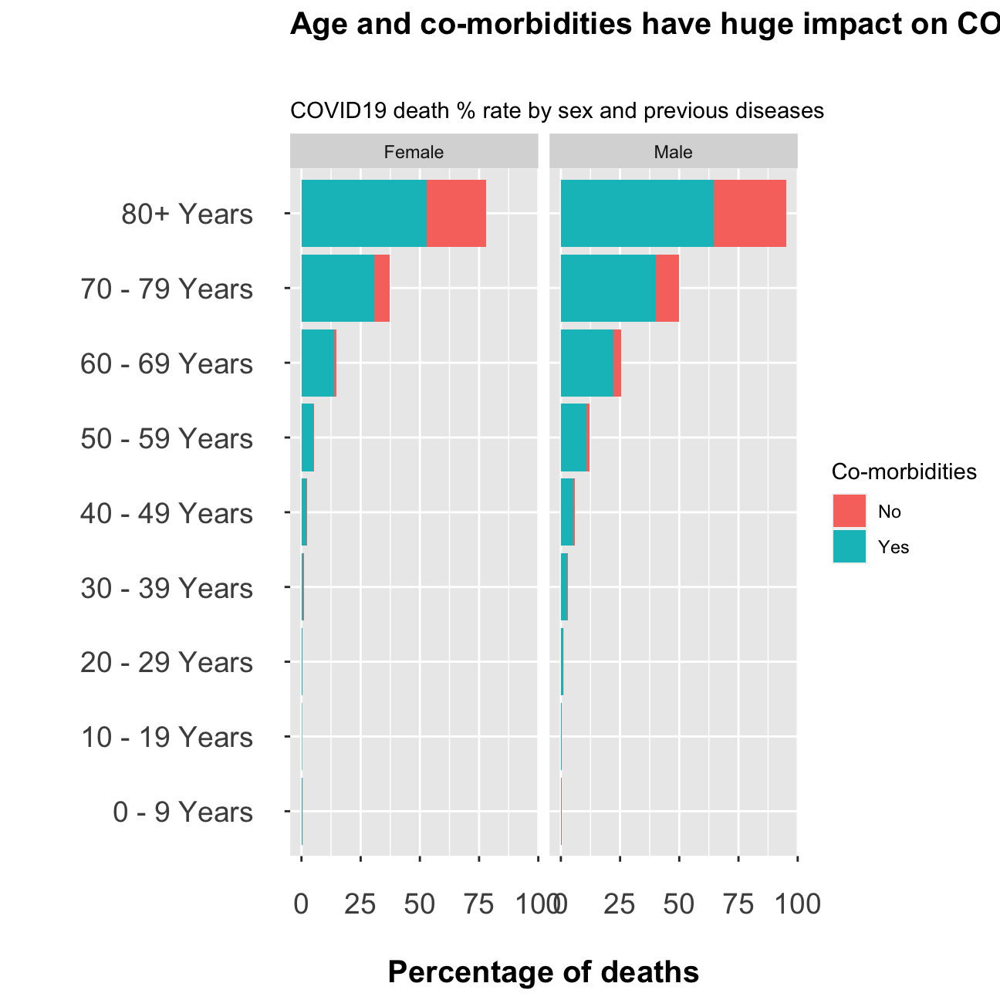
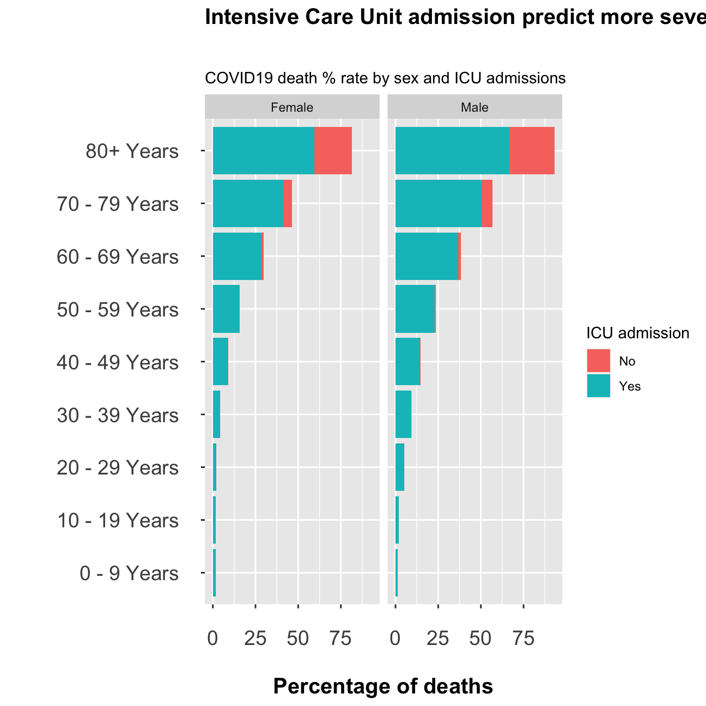

# file contains 11 variables and 3.66m rows and is well over 380Mb.
# It will take time to download
# URL link to CDC to download data
url <- "https://data.cdc.gov/api/views/vbim-akqf/rows.csv?accessType=DOWNLOAD"
covid_data <- vroom::vroom(url)%>% # If vroom::vroom(url) doesn't work, use read_csv(url)
clean_names()Death rate by age group, sex, and whether the patient had co-morbidities or not
# We use the covid_data dataset and select the data we need for this graph
data_g1 <- covid_data %>%
filter(sex == c('Male', 'Female'),
death_yn != "Unknown",
death_yn != "Missing",
medcond_yn != "Missing",
medcond_yn != "Unknown",
age_group != 'Unknown') %>%
group_by(age_group, sex, medcond_yn) %>%
summarise(number_of_death = count(death_yn %in% 'Yes'),
all = count(death_yn %in% c('Yes', 'No')),
death_rate = 100*number_of_death / all)
# We plot using ggplot2
ggplot(data_g1, aes(x = age_group, y = death_rate, fill = medcond_yn)) +
geom_col() +
facet_wrap(~sex) +
coord_flip() +
theme(axis.text.x = element_text(size = 14, margin=margin(15,0,0,0)),
axis.text.y = element_text(size = 14, margin = margin(0,15,0,0)),
plot.title = element_text(size = 15, face = "bold", margin = margin(0,0,30,0)),
axis.title.x = element_text(size=15, face="bold", margin=margin(20,0,0,0)),
axis.title.y = element_text(size=15, face="bold", margin=margin(0,20,0,0))) +
labs(x = "",
y = "Percentage of deaths",
title = "Age and co-morbidities have huge impact on COVID19 fatality rate",
subtitle = "COVID19 death % rate by sex and previous diseases",
fill ="Co-morbidities")
Death rate by age group, sex, and whether the patient was admited to Intensive Care Unit (ICU) or not.
data_g2 <- covid_data %>%
filter(sex == c('Male', 'Female'),
death_yn != "Unknown",
death_yn != "Missing",
hosp_yn != "Missing",
hosp_yn != "Unknown",
age_group != "Unknown") %>%
group_by(age_group, sex, hosp_yn) %>%
summarise(number_of_death = count(death_yn %in% 'Yes'),
all = count(death_yn %in% c('Yes', 'No')),
death_rate = 100*number_of_death / all)
ggplot(data_g2, aes(x = age_group, y = death_rate, fill = hosp_yn)) +
geom_col() +
facet_wrap(~sex) +
coord_flip() +
theme(axis.text.x = element_text(size = 14, margin=margin(15,0,0,0)),
axis.text.y = element_text(size = 14, margin = margin(0,15,0,0)),
plot.title = element_text(size = 15, face = 'bold', margin = margin(0,0,30,0)),
axis.title.x = element_text(size=15, face='bold', margin=margin(20,0,0,0)),
axis.title.y = element_text(size=15, face='bold', margin=margin(0,20,0,0))) +
labs(x = '',
y = 'Percentage of deaths',
title = 'Intensive Care Unit admission predict more severe and deadly infections',
subtitle = 'COVID19 death % rate by sex and ICU admissions',
fill = 'ICU admission')